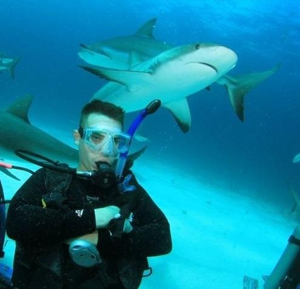

About Me

My name is Brian Yack. I am a Sales Operations Specialist at Triple Crown Consulting with a prior 8 year history in placing senior level hardware and software engineers on a contract basis at Triple Crown. I am currently enrolled in the UT Austin coding bootcamp for Fullstack web development.
I've already had a passion for computers and new technologies and am excited to learn Fullstack web development. My hobbies include scuba diving, offshore kayak fishing, cooking, and travelling the globe. In addition, I am an avid fan of anything shark related. Scuba diving with sharks is a major passion of mine. Thus far I have been diving with sharks Oahu, Kona, and Nassau. I hope to add to that list over the coming years.